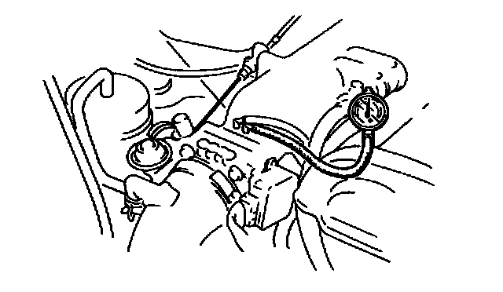

Intake Manifold: Testing and Inspection
Intake Manifold Vacuum Inspection1. Verity air intake hoses are installed properly.
2. Start the engine and run at idle.

3. Measure the intake manifold vacuum by using a vacuum gauge.
Specification
More than 60 kPa (450 mmHg, 16 in Hg)
4. If not as specified, inspect following.
- Air suction at: Throttle body installation point Intake manifold installation point PCV valve installation point
- Fuel injector insulator
- Accelerator cable free play
- Engine compression
NOTE:
- Air suction can be located by engine speed change when lubricant is sprayed on the area where suction is occurring.